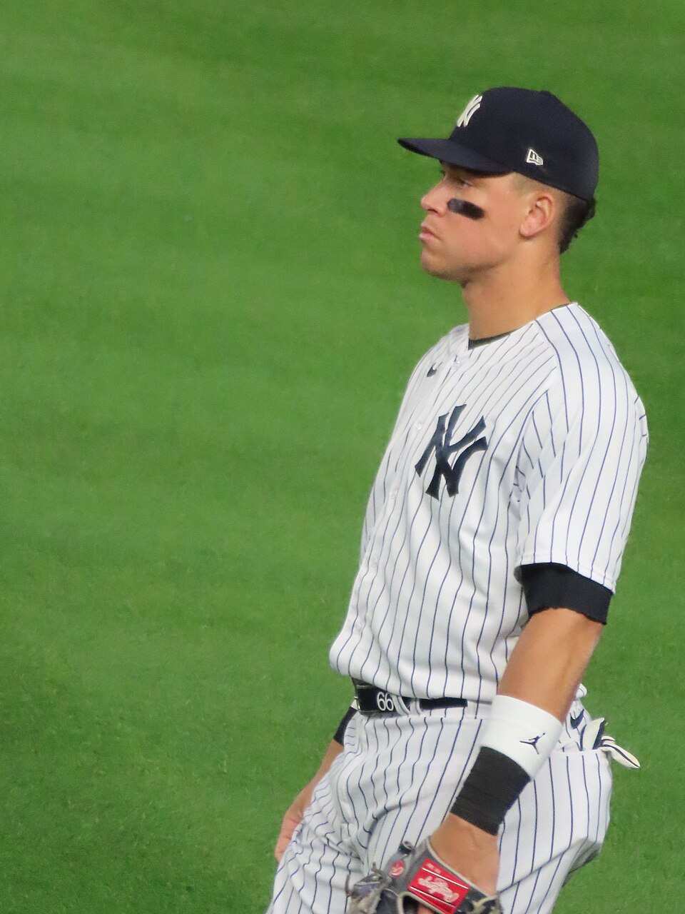

The 2025 AL MVP race
With the majority of the season through, it has become clear that only two men have a serious chance at MVP in the American League: Aaron Judge and Cal Raleigh.
Judge is a right fielder for the New York Yankees while Raleigh is a catcher for the Seattle Mariners.
Aaron Judge's Case

By Doc Cardio - Own work, CC BY-SA 4.0, https://commons.wikimedia.org/w/index.php?curid=132321934
God of WAR
According to FanGraphs, Judge leads MLB in WAR (Wins Above Replacement, a general stat that encompasses all aspects of a player). He has 7.3 WAR. Raleigh is 2nd, with a close but slightly lower 7.0 WAR.
On Baseball Reference, Judge leads MLB with 6.8 WAR, while Raleigh is 5th with 5.7 WAR.
Full Frontal Assault
Looking strictly at offensive numbers, Judge is the superior player. Much of the close WAR numbers come from Raleigh being a C, which on average is the best position defensively and worst position offensively. Judge plays RF, a stronger position hitting-wise and less important fielding-wise.
batting average
on-base percentage
slugging
and more advanced offensive stats like wRC+ and wOBA
Cal Raleigh's Case

By Arc1294 - Own work, CC BY 4.0, https://commons.wikimedia.org/w/index.php?curid=174577963
Outta the Park
Cal Raleigh leads MLB with 46 home runs. Raleigh would have to hit 16 homers in 38 games to tie Judge's 2022 record of most AL homers in a single season. He is currently on pace for 60 home runs.
Staying Healthy
On July 27th, Judge hit the IL with a right flexor strain. He returned to the Yankees on August 6th strictly as a DH. While a relatively short injury, health is extremely valuable in a baseball player. At the All-Star Break, Judge had 7.4 fWAR and 7.1 bWAR. Both have shrunk. Raleigh, by contrast, has been healthy all year. WAR is ultimately a counting stat. The more games, the more WAR one can accumulate.